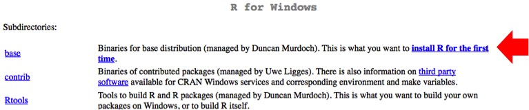
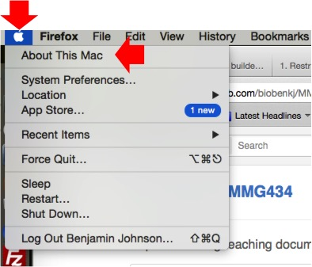
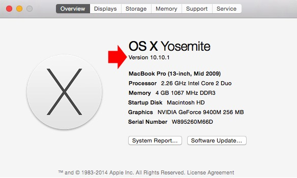
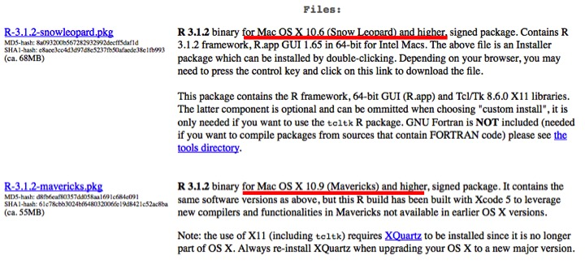

Install software and make sure everyone is on the same page¶
Before moving forward to mapping reads to the genome, it is necessary to QC the reads and remove low quality reads and adapter sequences. Further we need the ability to perform differential gene expression between conditions. We have chosen to do this through several software packages. Below are some instructions on how to install them.
Trimmomatic¶
Trimmomatic is a commonly utilized tool for QC/trimming short reads and has been implemented in RNA-seq approaches in the literature and is the go to tool at the MSU sequencing facility (RTSF).
- Trimmomatic can be downloaded from here.
- Scroll down the page (which you can read at your leisure later if you are interested) to where it says “Download Trimmomatic”
- Click on the link that says “binary”

- The file will end up in your downloads folder and will likely need to be unzipped as it is compressed. This can typically be accomplished just by double clicking on the file itself in your downloads folder.
- Once this is done, move the folder to your desktop.
Note
Trimmomatic runs on Java. Go here and click on “Download” and download/install the latest version of Java for your computer. Trimmomatic will not run unless you have Java installed.
- Open the Trimmomatic folder on your desktop and navigate to the folder called adapters.
- Drag and drop the file TruSeq3-SE.fa out of the adapters subfolder and into the main Trimmomatic folder. The list of files in the main folder will like be: an adapters folder, LICENSE, trimmomatic-0.32.jar, and TruSeq3-SE.fa.
- You should be all set for installing this software!
FastQC¶
FastQC is an application that can be utilized to assess sequence data. It’s worth looking at the reads after trimming/before aligning to the genome.
- FastQC can be downloaded here.
- The software is well documented and quite powerful. Every statistic/assessment that it draws can be found in the FastQC documentation. Further, you can watch a tutorial video and view examples of good Illumina data and bad Illumina data.
- The file will end up in your downloads folder. If you are a Windows user, double click on the run_fastqc bat file. If you are a Mac user, double click on the fastqc_vX.XX.X.dmg file to run the application.
Note
FastQC runs on Java. Go here and click on “Download” and download/install the latest version of Java for your computer. FastQC will not run unless you have Java installed.
- Please attempt to open the software to make sure that everything will at least open and run.
- Congratulations! You’ve installed another piece of software for this module.
R¶
In order to do differential gene expression to compare treatments and identify what is changing at the transcript level, we need to install the statistical programming language R and a really neat interface to work in R called RStudio.
- R can be downloaded from here.
- Click on the appropriate link for your operating system (Linux, Mac OS X, or Windows).
- Then, click on the latest version of the software. This will initiate the download. Windows users unless you know you already have R installed, click on the install R for the first time link (see below). Mac users you have two options based on what flavor of OS X you have. If you are not sure what version you have, look at the screen shots below.
Windows users:
Mac users (to determine OS X version):
 Mac users (version of R to download):
- After the download finishes, double-click on the file and follow the instructions to install the software.
- Congratulations! You’ve installed yet another piece of software for this module.
RStudio¶
RStudio is a fantastic interface to work in R. R does have a graphical user interface (GUI) that you can download and use, however I find RStudio much more intuitive/easier to use.
- RStudio can be downloaded here.
- We want to download and install the open-source version of RStudio for the desktop.
- Double click the file after the software has finished downloading and follow the instructions to install the software.
- That’s it!
Qualimap¶
The last piece of software that is nice to have is a software suite that works with Java and R to generate PDF documents summarizing the data post-alignment to the genome.
- Qualimap can be downloaded here.
- Click on the .zip file (as seen below)
- The file will end up in your downloads folder and will likely need to be unzipped as it is compressed. This can typically be accomplished just by double clicking on the file itself in your downloads folder.
- Once this is done, move the folder to your desktop.
- Before we can run this software suite, we will need to install a few packages in R: optparse (from CRAN), NOISeq, Repitools, Rsamtools, GenomicFeatures, rtracklayer (all available from Bioconductor).
- To do this, open RStudio, and click on the packages tab and then the Install button.
- Type optparse into the Packages (separate multiple with space or comma): field. Then click Install. RStudio should do the rest.
- To install the packages from Bioconductor, click next to the > cursor. Type source(“http://bioconductor.org/biocLite.R”) and hit Enter/Return.
- Then type biocLite(“NOISeq”) and hit Enter/Return. Repeat for Repitools, Rsamtools, GenomicFeatures, and rtracklayer.
- That’s all the software we need to install for now!